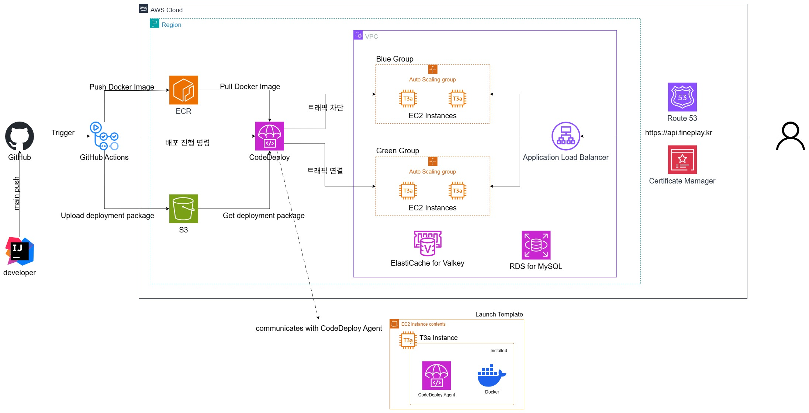

축구 경기 영상 분석 서비스 Fine Play를 백엔드·인프라부터 만들어 운영합니다. 실제 트래픽에서 만난 커넥션 풀 고갈, N+1, 트랜잭션 전파, 캐시 문제를 원인부터 파고들어 해결했습니다. 각 케이스에 문제 → 원인 분석 → 해결 → 결과를 담았습니다.
Fine Play(축구 분석)와 Fine Day(선수 매칭)를 운영하는데, 인증과 인프라, 배포를 서비스마다 따로 만들 여력이 없었습니다.
중복 인증과 배포를 없애 소수 팀이 두 서비스를 함께 굴릴 수 있게 됐고, iOS·Android·Web으로 출시했습니다(Apple 심사 반복 돌파).
무엇을 합치고 무엇을 나눌지 초기에 정해두니, 이후 기능이 늘어도 운영 복잡도가 크게 오르지 않았습니다.

운영 중 Too many connections가 나면서 앱이 못 뜨고, Docker가 자동 재시작하며 커넥션이 더 쌓이는 악순환으로 전 인스턴스가 내려갔습니다.
Threads_connected가 MySQL 한계(151)에 닿았고 재시작마다 계단식으로 늘었습니다. 원인은 HikariCP 풀 상한이 없던 것이었습니다.한계 대비 여유를 두고 안정 운영에 들어갔고, 재시작 악순환은 다시 나오지 않았습니다.
오토스케일·재시작 환경에서는 풀 상한을 개별 인스턴스가 아니라 전체 인스턴스 합으로 잡아야 한다는 걸 이 장애로 확인했습니다.
토큰이 탈취·재사용돼도 피해를 막고 싶었고, 동시에 Redis가 멈춰도 인증과 서비스가 함께 죽지 않게 하고 싶었습니다.
setIfAbsent 분산락으로 하나만 통과시켰습니다.재사용 공격에 대응하는 인증 구조를 갖췄고, Redis가 죽어도 서비스가 멈추지 않게 만들었습니다.
정상 동작만이 아니라, 장애가 났을 때 무엇을 열고 무엇을 닫을지(페일오픈/클로즈)를 함께 정해야 한다는 걸 배웠습니다.
유저 리스트가 길어질수록 화면 하나에 네트워크 요청이 크게 늘었습니다. 동작은 그대로 두고 비용만 줄여야 했습니다.
@ManyToOne을 즉시 로딩에서 지연 로딩으로 바꿔 제거했습니다.DTO를 보강하면 →1까지 줄일 수 있음을 설계상 확인했고, 정적 분석 0 error를 유지했습니다.
요청 수처럼 명확한 지표로 개선을 먼저 검증하고, 이어서 응답시간을 실측해 체감 성능까지 확인합니다.
하나의 트랜잭션에 일을 너무 많이 묶으면, 뒤에서 난 예외가 앞의 성공까지 되돌립니다. 어긋나면 안 되는 데이터를 지켜야 했습니다.
REQUIRES_NEW로 분리해 독립 커밋되게 했습니다.롤백에 데이터가 휩쓸리는 경로가 사라졌고, 결제 성공 뒤 500이 재발하지 않았습니다.
트랜잭션은 크게 묶을수록 안전한 게 아니라, 같은 커밋에 둘 것과 분리할 것을 나누는 설계라는 걸 배웠습니다.